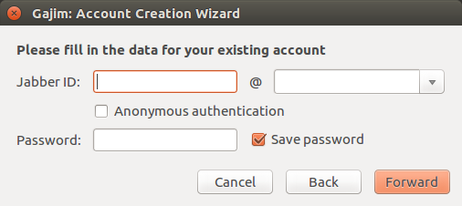

Сегодня мы разберёмся, как запустить XMPP-сервер Prosody в Centos 7 используя Vagrant.
Основные этапы:Вначале нужно поставить Vagrant. Для его работы необходим VirtualBox. Найти его можно здесь.
Дальше ставим сам Vagrant следующей командой:
# apt-get install vagrant
Теперь нам нужно скачать нашу среду. Мы будем использовать CentOS 7:
# vagrant box add centos/7
Создаём папку, внутри неё запускаем терминал и выполняем:
# vagrant init
Команда сгенерирует для нас файл 'Vagrant', в котором нужно поменять значение поля 'config.vm.box' на "centos/7" и добавить строку config.vm.network "forwarded_port", guest: 5222, host: 5222.
Дальше нам нужно запустить нашу виртуальную машину. В директории с файлом 'Vagrant':
# vagrant up
На это может уйти несколько минут. Далее, входим в консоль машины:
# vagrant ssh
Теперь нам нужно устанавить репозиторий EPEL:
# yum install epel-release
И сам сервер:
# yum install prosody
Все настройки задаются в файле '/etc/prosody/prosody.cfg.lua'. Нам необходимо внести следующие изменения в пункте ssl:
ssl = {
key = "/etc/prosody/certs/localhost.key";
certificate = "/etc/prosody/certs/localhost.cert";
protocol = "sslv23";
dhparam = "/etc/prosody/certs/dh-2048.pem";
}
и добавить в конец файла:
VirtualHost "letiko.loc"
VirtualHost "xmpp.letiko.loc"
Теперь мы можем запустить сервер и добавить несколько пользователей:
# prosodyctl start
# prosodyctl adduser user_first@letiko.loc
# prosodyctl adduser user_second@letiko.loc
Чтобы подключиться к серверу мы будем использовать кроссплатформенное приложение Gajim. Для пользователей Android существует Xabber.
При первом запуске перед нами появится окно для входа в аккаунт:
Сюда мы вводим данные одного из пользователей, созданных ранее.
Всё, мы подключились к нашему серверу и теперь можем добавить других пользователей в список контактов, чтобы начать беседу.